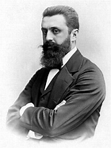
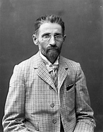
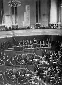
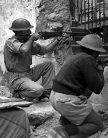
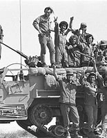
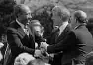

| 1885 |
The term "Zionism" is first coined by Viennese writer
Nathan Birnbaum |
 |
| 1896 |
Theodor Herzl, founder of the Zionist movement,
calls for the "restoration of the Jewish State" |
 |
| 1897 |
The first Zionist congress takes place in Basel, Switzerland,
marking a significant event in the early stages of the Zionist movement |
 |
| 1947 |
The United Nations proposes a partition plan for Palestine,
leading to the creation of the state of new state
and the beginning of the Arab-Israeli conflict |
 |
| 1973 |
The Yom Kippur War, also known as the October War,
takes place, resulting in significant geopolitical shifts
in the region |
 |
| 1979 |
Representatives from Egypt signed
the Camp David Accords, a peace treaty
that ends the thirty-year conflict |
 |